![Wayne County Community College District]()
The WCCCD AI Adoption Framework
The District’s plan for adopting artificial intelligence, built on two foundations: it is organized around the Chancellor’s twelve strategic priorities — every AI use case must serve one of them — and it is grounded in validated national research from Achieving the Dream, EDUCAUSE, and the NIST AI Risk Management Framework. A briefing memo introduces it, and a working proof of concept — an AI-built practice app for ENG 119, live today — shows what it produces.
Every AI use case serves a named outcome — for our students, our operations, and our mission.Briefing Memo
Introduces the framework — its priority foundation, its research base, and where it stands — with next steps for Cabinet.
Presentation
A visual introduction to the framework — more substance than the memo, without the framework’s full detail. View the slides in the browser or download the deck.
View the presentationThe WCCCD AI Adoption Framework (draft, August 2026)
Governance, risk tiers, build standards, agent parameters, and a twelve-month plan of work. Two foundations carry it: every AI use case must serve one of the Chancellor’s twelve Action Priorities, and every element applies validated national research — Achieving the Dream’s roadmap for the AI-enabled community college, the NIST AI Risk Management Framework, and EDUCAUSE’s 2026 workforce research, each cited with its publication date and verified current.
Open the frameworkENG 119 Companion
AI generated a complete practice app strictly from the course syllabus — repeatable for any gateway course. Zero student data collected; ENG 120 in process.
See the proof of conceptBriefing Memo — read first
⬇ Download PDF WordWAYNE COUNTY COMMUNITY COLLEGE DISTRICT
MEMORANDUM
TO: Chancellor’s Cabinet
FROM: [Name, Title]
DATE: August 2026
RE: The WCCCD AI Adoption Framework — introduction, status, and a working proof of concept
Action Priority 3 of the Chancellor’s 2026–2027 Action Priorities directs the District to develop an AI-driven efficiency model and policies. This memo introduces the result of that work: the draft WCCCD AI Adoption Framework, the District’s plan for adopting artificial intelligence deliberately. The framework rests on two foundations — it is built on the Chancellor’s strategic priorities, and it is grounded in validated national research. The memo closes with a working proof of concept that shows what the framework produces in practice.
1. Built on the Chancellor’s strategic priorities
Source: Chancellor’s 2026–2027 Action Priorities (wcccd.edu)
The framework is organized around the twelve Action Priorities rather than around the technology. Every AI use case in the District must trace to one of the twelve priorities and name the outcome it serves — an enrollment, completion, service, or efficiency result — before any tool is considered. Priority 3 supplies the mandate; the other eleven priorities define the work AI must serve. On that foundation the framework establishes a Steering Committee drawn from existing roles (no new positions), an interim Acceptable Use Guideline ready for issuance, a risk-tier model with one permanent line — AI does not make consequential decisions about people — standards under which District staff may build AI tools as well as buy them, capability-based governance for AI agents, and a twelve-month plan of work with the first pilot live within 90 days of launch.
2. Grounded in validated national research
The framework is not an invention; it is an application of the strongest current guidance in higher education, adapted to WCCCD’s scale and mission. Its structure draws on Achieving the Dream’s task force report, Creating the AI-Enabled Community College — the national roadmap most directly applicable to institutions like ours, and a natural fit given the District’s 2026 ATD Leader College designation. Its risk model follows the NIST AI Risk Management Framework, the federal reference standard. Its workforce and adoption findings come from EDUCAUSE’s 2026 research — which reports that 94 percent of higher education professionals have used AI for work while only 54 percent are aware of an institutional policy governing it, the exact gap this framework closes. Every source is cited with its publication date and was verified as the most recent available edition as of August 2026.
Where we are: the framework is a completed draft, attached to this memo. Nothing in it has been adopted; it comes to Cabinet for review, discussion, and — when Cabinet is ready — the three decisions listed in its executive summary that put it in motion.
3. Proof of concept: the ENG 119 Companion
To test the framework’s ideas in practice, District staff used AI to generate a complete study application strictly from a course syllabus. The result is the ENG 119 Companion (English I), live now at ecrutch1.github.io/Eng119: six quiz-preparation modules and four essay-coaching modules mapped to the section’s actual syllabus, competencies, and grade weights — with drills, rewrite workshops, and mastery tracking. It is practice-only (it cannot write a student’s paper), collects no student data (progress stays on the student’s own device — no FERPA exposure, no servers, no cost), and nothing generative runs in front of students: AI did the development work once.
The proof of concept demonstrates two things. First, that the framework’s approach works: this is what its build standards and risk tiers produce — a high-impact tool in gateway English, among the strongest predictors of persistence and completion, at the lowest possible risk. Second, that it is repeatable: the ENG 120 (English II) companion is in process now, produced by swapping course content into the same engine. A companion for any gateway course — College Algebra, Introduction to Psychology, Anatomy and Physiology — is roughly a week of content work from a syllabus, not a software project. A supporting overview for Academic Affairs, covering faculty review, endorsement, and adoption questions, is attached. How the proof of concept lines up with the priorities the framework is built around:
| Chancellor’s Action Priority | How the ENG 119 Companion serves it |
|---|---|
| Priority 3 — AI-driven efficiency model and policies | The framework itself is this priority’s deliverable; the companion is its first working product. |
| Priority 4 — Distance learning and virtual student support | Around-the-clock guided practice on any device, on or off campus, online or offline. |
| Priority 8 — High-touch, student-centered support | Structured practice handles repetition, so class and office-hour time can go to teaching, not drill. |
| Priority 9 — The Completion Agenda | Aimed at gateway English, one of the strongest predictors of persistence and completion. |
| Equity (framework guiding principle) | Free, no login, works offline after first load — built for students with unreliable devices or data plans. |
4. Next steps
Three modest steps keep this moving: time on an upcoming Cabinet agenda to discuss the draft framework and the decisions it requests; a referral to Academic Affairs of the proof of concept’s faculty-adoption questions (endorsement of named sections, instructor review and its recognition, hosting, and the accessibility pass that must precede any district-level rollout); and feedback on the framework by [date]. I would welcome the chance to demonstrate the ENG 119 Companion live — it takes about five minutes.
Attachments: (1) WCCCD AI Adoption Framework, draft, August 2026 — the subject of this memo; (2) ENG 119 Companion, live at ecrutch1.github.io/Eng119 — proof of concept; (3) Course Companion overview — supporting detail for Academic Affairs.
Presentation — the plan at a glance
▶ Slideshow ⬇ PowerPoint PDFTwelve slides introducing the framework — its foundations, the risk tiers, the proof of concept, the Year 1 pilots, the roadmap, and the decisions requested of Cabinet. Press ▶ Slideshow for full-screen viewing (arrow keys or tap to advance), scroll to skim, or download above to present.
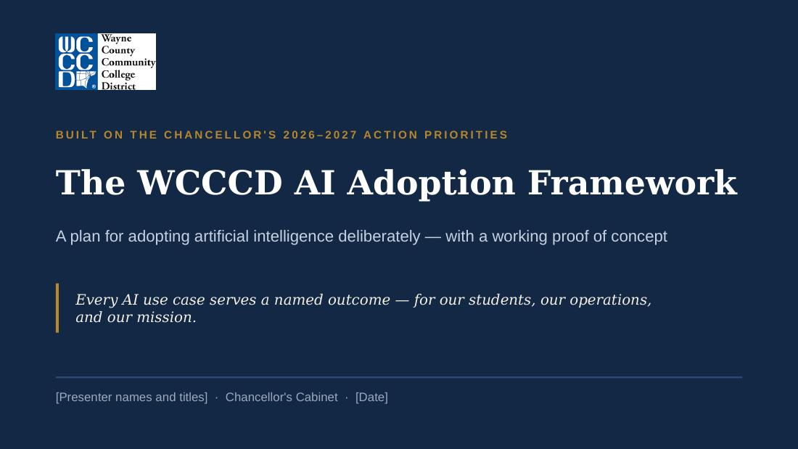
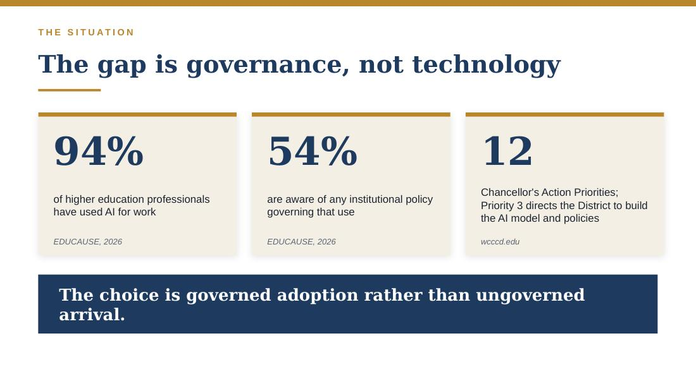
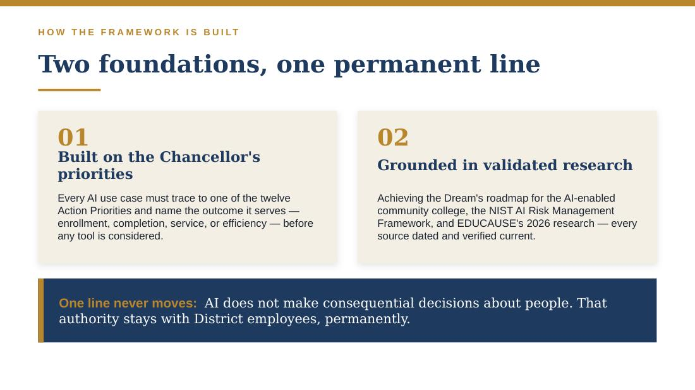
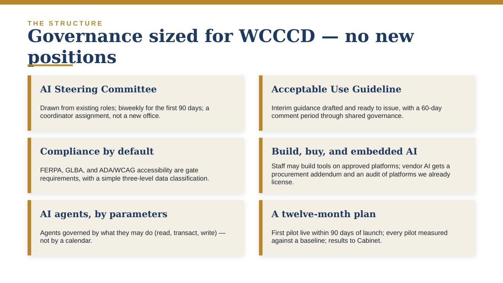
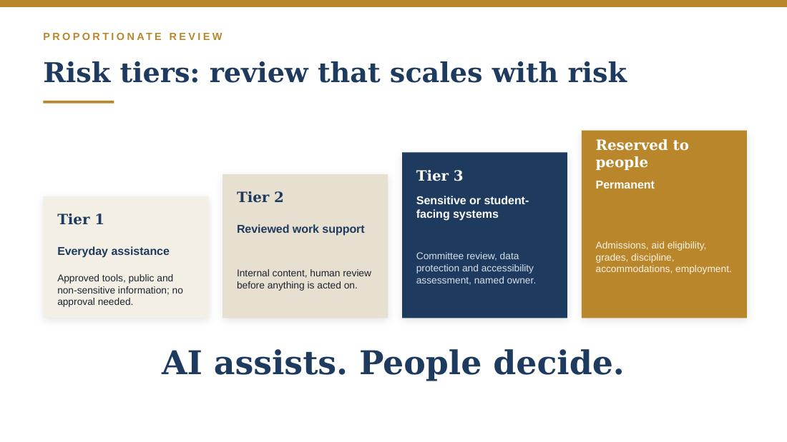
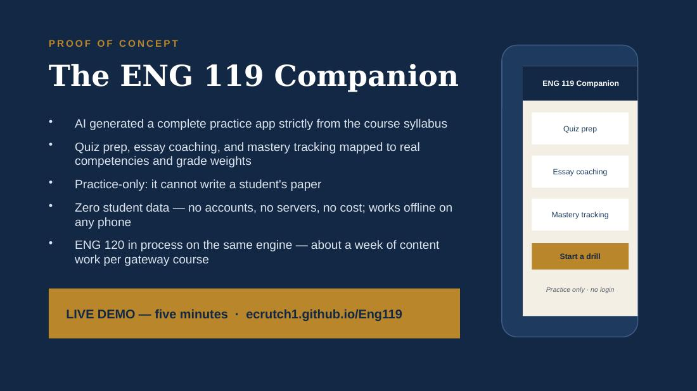
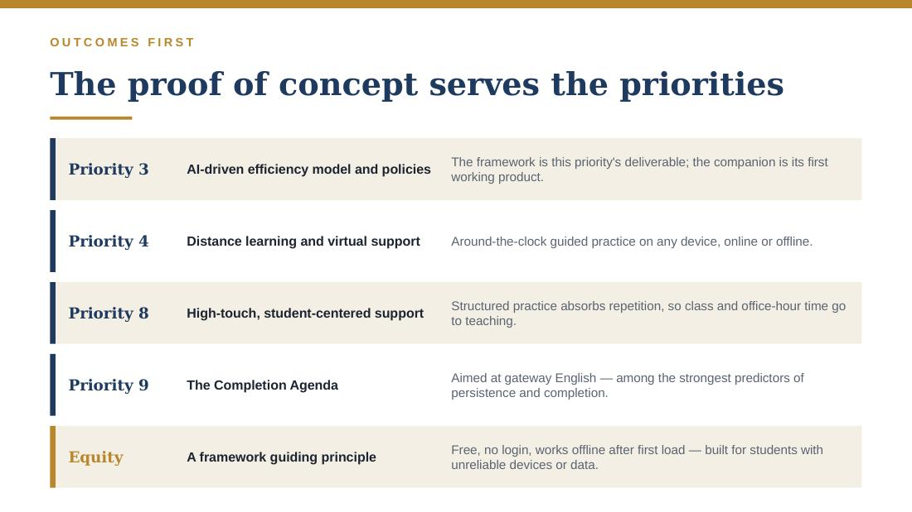
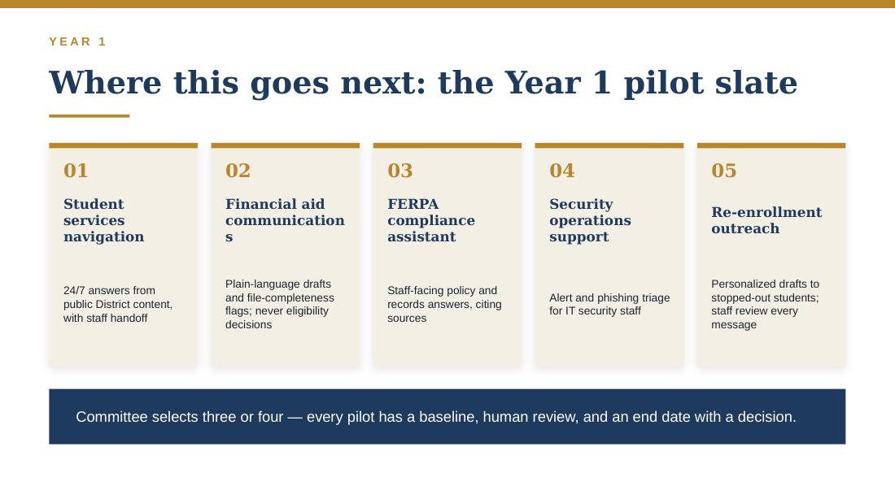
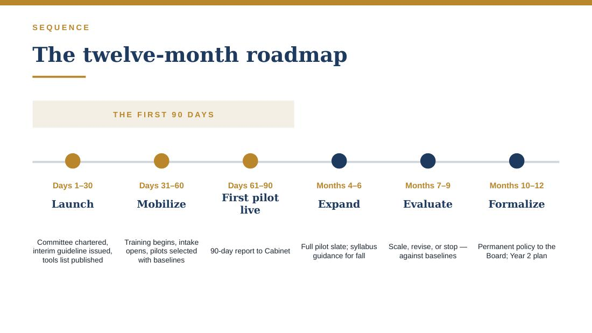
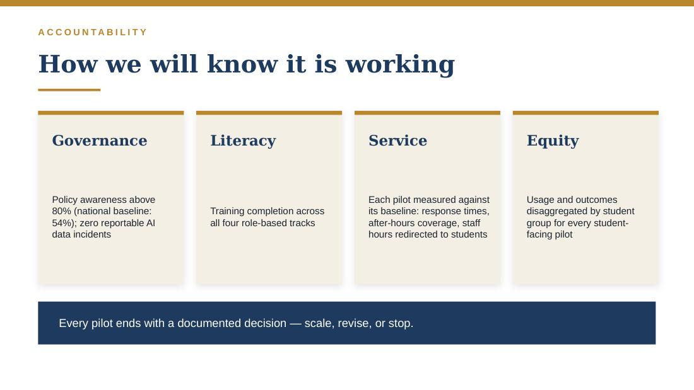
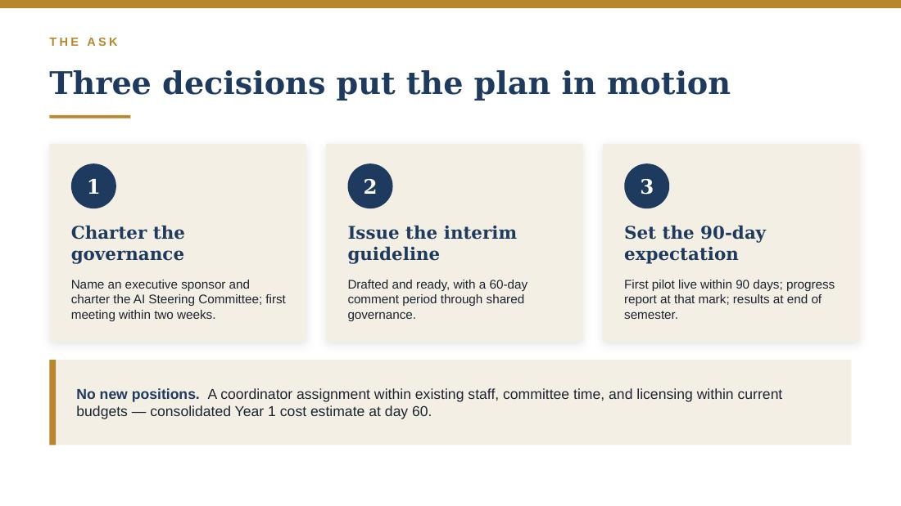
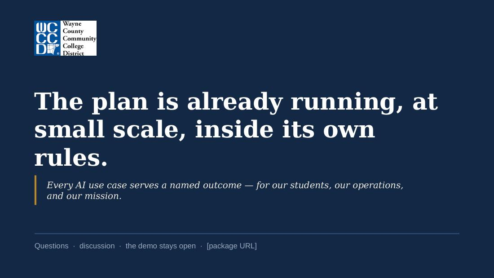
WCCCD AI Adoption Framework — draft, August 2026
⬇ Download PDF WordWAYNE COUNTY COMMUNITY COLLEGE DISTRICT
Artificial Intelligence Adoption Framework
Governance and a Twelve-Month Plan of Work
In support of the Chancellor’s 2026–2027 Action Priorities
Prepared for the Chancellor’s Cabinet and Information Technology Leadership
DRAFT — August 2026
Executive Summary
This plan is built around the Chancellor’s 2026–2027 Action Priorities, not around artificial intelligence. The twelve priorities define what WCCCD is working to accomplish: enrollment access and affordability, the distance learning campus, workforce partnerships and micro-credentials, student-centered support, the Completion Agenda, IT transformation, professional development, and the District’s role as a community resource. Action Priority 3 — “develop an AI-driven efficiency model and policies to automate routine tasks, enhance instruction and decision-making, prepare students for future careers, and streamline administrative processes” — directs the District to build the policies and capacity this framework describes. Every AI use case in this plan must connect to one of the twelve priorities and name the outcome it serves.
The framework draws on national guidance from EDUCAUSE, the NIST AI Risk Management Framework, and Achieving the Dream’s roadmap for the AI-enabled community college, scaled to the governance structures, staffing, and student population of a multi-campus urban community college district.
The framework reflects an honest assessment of where the District is today: at the beginning. Like most community colleges, WCCCD employees are already using generative AI tools — national EDUCAUSE research finds 94 percent of higher education professionals have used AI for work, while only 54 percent are aware of any institutional policy governing that use. The risk to the District right now is not runaway autonomous AI; it is ungoverned everyday use, AI features arriving silently inside platforms we already own, and a missed opportunity to direct AI toward the District’s student success goals.
Accordingly, this framework proposes three areas of work for the next twelve months:
1. Put basic governance in place. A District AI Steering Committee built from existing leadership structures, an interim Acceptable Use Guideline (drafted in Appendix A), an approved-tools list, and a simple risk-tier model that tells every employee what is permitted today.
2. Build AI literacy for employees and students. Role-based training delivered through existing professional development channels, directly supporting Action Priority 11 (technology-focused staff training) and Achieving the Dream’s call for AI-agile students.
3. Run three to four measurable pilots in high-impact service areas. Financial aid communication, student services navigation, records compliance, and security operations — piloted at the communication and compliance layer, with a person making every decision and reviewing every message. Selected for student impact and measurability, not for novelty.
Agentic AI — systems that take actions in District systems with limited human intervention — is already arriving inside the platforms the District licenses: the major higher education vendors now ship agent capabilities as standard product. The District cannot choose when agents arrive; it can only choose between governed adoption and ungoverned arrival. This framework governs them from the start, by parameters rather than by calendar: any agent, whether embedded in a licensed platform or developed by District staff, may be piloted whenever it meets the capability-based requirements in Section 11, which scale with what the agent is permitted to do. Only one line is permanent: AI does not make consequential decisions about people. Gartner’s public caution that more than 40 percent of agentic AI projects may be canceled by the end of 2027 is an argument for this discipline, not for delay: the projects that fail are those with unclear value and weak controls.
What Cabinet is asked to approve. Three decisions put this plan in motion: (1) name an executive sponsor and charter the District AI Steering Committee, with its first meeting within two weeks; (2) authorize issuance of the interim Acceptable Use Guideline in Appendix A, which is drafted and ready; and (3) set the expectation that the first pilot is live within 90 days, with a progress report to Cabinet at that point and pilot results at the end of the first semester. Year 1 requires no new positions, but it does require named capacity: a designated coordinator assignment within existing staff, and committee members given real time for review. The committee delivers a consolidated Year 1 cost estimate — licensing, contracted tools, and staff time — alongside pilot selection at day 60; exceptions come back to Cabinet.
The guiding rule throughout: use the least autonomous technology capable of achieving the outcome.
1. The Chancellor’s Action Priorities as the Hub of the Plan
This framework establishes how WCCCD will evaluate, adopt, govern, and measure artificial intelligence across the District’s six campuses. It is written for the Chancellor’s Cabinet and IT leadership, and it is designed to be adopted through the District’s existing governance processes rather than to create parallel bureaucracy.
1.1 Outcomes first
Each of the twelve Action Priorities names an outcome the District has committed to. AI is considered only where it is the least autonomous technology capable of advancing one of those outcomes. Priority 3 has a different role from the other eleven: it directs the District to build the policies, governance, and training that allow AI to serve the rest safely. The table below maps each priority to where AI can realistically help in Year 1, and where it should wait.
| Chancellor’s Action Priority | Where AI serves this outcome |
|---|---|
| 1. Accelerate enrollment management (recruitment, affordability, access) | After-hours inquiry support from public content; plain-language drafting of enrollment and affordability communications, human-reviewed. A Year 1 pilot area. |
| 2. Advance facilities development | Modest Year 1 role: drafting and document support for planning. Facilities analytics are a later-year consideration. |
| 3. Develop an AI-driven efficiency model and policies | The enabling priority. This framework — governance, risk tiers, acceptable use, literacy, inventory — is its Year 1 deliverable. |
| 4. Implement the distance learning campus model (Center for Learning Technology, virtual student support) | The most natural home for student-facing AI service: 24/7 navigation help and comprehensive virtual support, with the Center for Learning Technology as pilot partner. |
| 5. Expand marketing, social media, and customer experience | Drafting and versioning content for human review; measuring service experience. Tier 1–2 uses. |
| 6. Increase workforce and industry partnerships | Labor-market scanning support and employer engagement materials; informs which AI skills regional employers request. |
| 7. Develop industry-recognized certificates and micro-credentials | AI-related credentials are themselves a workforce product; AI supports curriculum development for review by faculty. |
| 8. Strengthen student-centered, high-touch support | AI handles routine questions and paperwork so staff hours shift toward direct, personal service. Every student-facing use is evaluated for who benefits and who is left out. |
| 9. Reimagine the Completion Agenda (dual enrollment, transfer, retention, completion) | Staff-facing advising and outreach support first. Predictive analytics only with Tier 3 review and disparate-impact monitoring. |
| 10. Advance the IT Transformation Plan | The technical backbone: data management, the AI inventory, the embedded-AI audit, and vendor controls all live inside this priority. |
| 11. Advance professional development (technology-focused training, digital skills) | The delivery channel for all four AI literacy tracks in Section 8. |
| 12. Continue innovative continuing education and community engagement | Community-facing AI literacy offerings extend the District’s role as a community resource. |
Year 1 pilots draw from Priorities 1, 4, 8, 10, and 11, where risk is manageable and results can be measured within a semester. Work under the remaining priorities is planned for Year 2 and will be shaped by what the pilots show.
1.2 Building on the District’s Achieving the Dream leadership
WCCCD’s designation as a 2026 Achieving the Dream Leader College is directly relevant to this work. ATD’s task force report, Creating the AI-Enabled Community College, is the national roadmap most applicable to institutions like ours, organized around eight action areas: strategic leadership; ethical AI governance; assessment of AI’s impact; staff capability building; professional learning and faculty engagement; curriculum redesign; workforce alignment; and investment in student success through AI. This framework carries out the first four action areas in Year 1 and schedules the remaining four for Year 2, keeping the District’s AI work centered on student success, consistent with our ATD partnership.
2. Where WCCCD Is Today
This framework begins with a candid assessment of the District’s current position:
Employees and students are already using generative AI tools individually, largely without District guidance — consistent with national patterns.
The District has not yet issued an acceptable-use policy for AI, and there is no approved-tools list, risk classification, or AI inventory.
AI capabilities are already arriving embedded in platforms the District licenses — the learning management system, Microsoft productivity tools, and enterprise administrative systems — whether or not the District initiates an “AI project.”
The District has real strengths to build on: a clear chancellor-level mandate (Priority 3), an ATD Leader College culture of using data to improve student outcomes, and existing professional development and shared governance structures that can carry this work.
The District is at the beginning of this work, and the plan should match that. The appropriate response is neither a ban, which would push AI use out of sight, nor a major platform investment the District is not yet positioned to govern. It is clear interim guidance, visible leadership, training, and a small number of carefully chosen pilots, put in place quickly.
2.1 Verifying the starting point: a 60-day readiness assessment
The picture above is a candid self-description; the plan’s first act is to verify it. During the first 60 days the District conducts a current-state AI readiness assessment with four parts: a survey of employee AI use, literacy, and policy awareness; an inventory of AI tools actually in use across the District, including tools employees have adopted on their own; the audit of AI features embedded in licensed platforms (Section 7.2); and a check of data and infrastructure readiness — the currency of the policy content that built assistants would draw on, and whether identity management can support the agent requirements in Section 11.
The findings are consolidated into a Current-State AI Readiness Report, delivered to Cabinet at day 60 and structured on the readiness dimensions EDUCAUSE uses for institutional assessment: strategy, governance, technology, workforce, and teaching and learning. That report becomes the baseline against which every Year 1 measure in Section 10.3 is read — and it applies the framework’s own rule to the framework itself: progress is measured from evidence, beginning with an honest account of where we are.
3. Guiding Principles
Start from District outcomes, not tools. Every AI use case must trace to one of the Chancellor’s Action Priorities and name the enrollment, persistence, completion, service, or efficiency outcome it serves — and how we will know.
Use the least autonomous technology capable of achieving the outcome. If a checklist, workflow rule, or FAQ page solves the problem, use that instead.
A person is accountable for every consequential decision. AI does not decide admissions, financial aid eligibility, grades, discipline, accommodations, or employment matters. Responsibility for those decisions rests with identified District employees.
Equity first. WCCCD serves one of the most diverse student populations in Michigan. Every AI deployment is assessed for disparate impact and for who is left out — including students on the far side of the digital divide.
Privacy and compliance by default. FERPA, the GLBA Safeguards Rule, and accessibility law (ADA/Section 508, WCAG 2.1 AA) are gate requirements, not post-deployment fixes.
Transparency. The District maintains an inventory of AI in use, discloses when students and employees are interacting with AI, and reports pilot results honestly — including failures.
Build on existing governance. AI oversight runs through structures the District already has — cabinet, shared governance, existing committees — with one small coordinating body added.
Measure and report. Pilots have baselines, measures, and end dates. Results go to Cabinet and, as appropriate, the Board of Trustees.
4. Governance: The District AI Steering Committee
National guidance converges on a simple division of labor: a small central group sets standards; departments identify and run use cases within them. (The strategic hub of this plan is the Action Priorities themselves, per Section 1; the committee described here is the standards center that keeps the work safe and coherent.) For a district of WCCCD’s scale, that center should be a committee, not a new office. No chief AI officer is required at this stage.
4.1 Charge
The District AI Steering Committee, chartered by the Chancellor and chaired by a cabinet-level executive sponsor, is charged to:
Issue and maintain the interim AI Acceptable Use Guideline and the approved-tools list.
Operate the use-case intake process, applying the risk-tier model in Section 5 and the agent capability parameters in Section 11.
Maintain the District AI inventory, including AI features embedded in licensed platforms.
Oversee the AI literacy program and the pilots, and report results to Cabinet each semester.
Recommend, within 12 months, a permanent policy for adoption through District governance and Board processes.
4.2 Membership
Eight to twelve members, drawn from existing roles: the executive sponsor (chair); the CIO or designee (vice-chair and operational lead); academic affairs; student services; a data steward from records/financial aid; institutional research; human resources; procurement and/or general counsel; two faculty representatives named through shared governance; and a campus operations representative to keep all six campuses in view. Student perspective is engaged at least each semester. During the first 90 days the committee meets every two weeks; monthly thereafter, with a standing intake docket. Between meetings, an expedited review group — the chair, the CIO or designee, and the relevant data steward — may approve Tier 1–2 requests, with decisions ratified at the next full meeting. The committee is supported by a designated program coordinator, an assignment within existing IT or institutional effectiveness staff rather than a new position, who maintains the inventory, the intake queue, and reporting between meetings.
4.3 Two problems this structure is designed to avoid
The first problem is over-centralization: when IT must approve every experiment, review becomes a bottleneck and employees work around it with unapproved, untracked tools. The second is fragmentation: departments purchase AI tools independently, and the District learns of its obligations after contracts are signed. The committee structure addresses both. It makes the approved path fast enough that employees use it, and it centralizes only what must be centralized — standards, the inventory, data rules, and procurement review — while leaving ownership of each use case with the unit that does the work. Faculty participation through shared governance is essential: guidance that touches instruction, evaluation, or workload will not succeed without it.
5. Risk-Tier Framework
Not all AI use carries the same risk, and a single universal approval process would apply too much review to routine drafting help and too little to systems that touch student records. The District classifies AI use into three tiers, plus a category permanently reserved to human decision-makers. Tiers are assigned at intake by the Steering Committee; Tier 1 requires no intake at all.
| Tier | What it covers | Examples | What is required |
|---|---|---|---|
| Tier 1 Everyday assistance | Approved tools, public or non-sensitive information only. No student or employee records. Output reviewed by the user. | Drafting routine communications Summarizing public documents Brainstorming, meeting notes |
Follow the Acceptable Use Guideline. No approval needed. |
| Tier 2 Reviewed work support | Internal (non-restricted) District content; outputs that inform staff work. A person reviews before anything is acted on or sent. | Drafting responses for staff review Searching internal policies and manuals First-draft job aids and training content |
Supervisor awareness; tool on approved list; use case logged in the AI inventory. |
| Tier 3 Sensitive or embedded systems | Anything touching student or employee data (FERPA/GLBA), any AI feature in an enterprise platform, any student-facing AI service. | LMS or ERP AI features Student-facing chat assistance Advising or outreach support tools |
Steering Committee review; data protection and accessibility assessment; vendor review (Section 7); named owner; monitoring plan. |
| Reserved to people | Consequential decisions about people. AI may inform the paperwork around these decisions; it does not make or materially influence them. Agents themselves are governed by the capability parameters in Section 11. | Admissions or aid eligibility decisions Grading, discipline, accommodations Hiring screens and employee evaluation |
Never delegated to AI. Agent proposals at any capability level go through Section 11. |
This three-tier structure is aligned with the NIST AI Risk Management Framework’s functions — Govern, Map, Measure, Manage. Agents, whether embedded in licensed platforms or developed by District staff, are in effect a fourth tier: their identity, permission, logging, and rollback requirements are set by the capability parameters in Section 11.
6. Data, Privacy, and Compliance Foundations
Data readiness is the most commonly cited barrier to AI value in higher education, and compliance exposure is where community colleges carry sector-specific risk. Four obligations shape every tier:
FERPA. Student education records may never be entered into AI tools that have not been reviewed and contracted for that purpose. This single rule, communicated clearly, eliminates the largest everyday risk the District faces today.
GLBA Safeguards Rule. As a Title IV institution, WCCCD is a financial institution under the FTC Safeguards Rule with respect to financial aid data. Any AI touching that data falls inside the District’s written information security program and is Tier 3 by definition.
Accessibility. Student-facing AI services must meet WCAG 2.1 AA. Under the Department of Justice’s ADA Title II web accessibility rule, as extended by the April 2026 interim final rule, large public entities such as WCCCD must comply by April 26, 2027 — a deadline that falls within Year 1 of this framework. Vendors must document accessibility (e.g., a current VPAT) before deployment.
Employment-related AI laws. States are actively regulating AI in employment decisions. Under this framework, AI does not make employment decisions at any point (Section 5, Reserved to People); any tool that would inform such decisions requires legal review before adoption.
6.1 A three-level data classification
Year 1 requires only a simple, teachable classification: Public (websites, catalogs, published schedules — usable in any approved tool); Internal (policies, procedures, non-sensitive operational documents — usable in approved tools configured so District data is not used for vendor model training); and Restricted (anything identifying a student or employee, all FERPA and GLBA data, health and disability information — never in any AI tool absent a contracted, Tier 3-approved system). Every employee can learn this in five minutes, and it does most of the compliance work.
7. Build, Buy, and Embedded AI
AI will reach WCCCD through three channels, and each needs its own controls. The District will receive AI — features switched on inside platforms already under contract. It will buy AI — dedicated tools and services acquired through procurement. And it will build AI — assistants and workflows assembled by District staff on approved platforms, such as retrieval-based assistants over District policies and configured agents within the platforms the District already licenses. Several of the strongest pilot candidates in Section 10.2, including the FERPA compliance assistant and policy search, are natural in-house builds. For received and bought AI, procurement and vendor management are where the District exercises most of its control over risk; for built AI, control comes from platform standards and the same intake discipline applied to everything else. EDUCAUSE has identified AI procurement as a distinct institutional challenge precisely because AI risks do not fit conventional acquisition review.
7.1 The AI procurement addendum
Every new procurement, and every renewal of a platform with AI features, includes a short set of vendor questions:
Is District data used to train vendor or third-party models? (Required answer: no, contractually.)
Which models power the service, and can the vendor change them without notice to the District?
Are prompts and outputs retained, where, and for how long? Can the District export and delete them?
Can AI features be disabled independently of the rest of the product?
What actions can the AI take in other systems, and are all actions logged in a form the District can review?
How does the vendor test for inaccurate output and disparate impact, and how are incidents disclosed to customers?
Is accessibility documented (current VPAT)? Is the District indemnified for intellectual-property claims?
Can costs scale with usage (tokens, transactions, autonomous activity), and what caps or alerts exist?
7.2 The embedded-AI audit
Launched with the readiness assessment in the first 30 days (Section 2.1) and completed by month six, IT leadership conducts a one-time audit of AI capabilities already present or announced in the District’s licensed platforms — the LMS, Microsoft environment, ERP/SIS, communication and contact-center tools, and security products — and records each in the AI inventory with a decision: enabled with review, disabled pending review, or not applicable. This prevents the District from acquiring new AI capability through a routine software update without having made a deliberate decision about it.
7.3 When the District builds
Building is encouraged where a workflow is District-specific, the knowledge involved is internal, and a commercial product would be paying a vendor to configure what staff can configure themselves. Building also develops exactly the internal capability that Action Priorities 3 and 11 call for. It carries one discipline requirement: a built assistant is governed identically to a purchased one. Every internal build must:
Go through the same intake, risk-tier assignment, and inventory registration as a purchased system.
Be built on a District-approved platform — not on personal accounts or unapproved services — so access, data handling, and logging are inspectable.
Draw only on approved, current knowledge sources, with a named owner responsible for keeping content accurate.
Be tested before deployment for accuracy, source citation, permission boundaries, and accessibility, like any Tier 2 or Tier 3 system.
Have documentation and a designated backup owner, so the tool survives the departure of the person who built it.
The build-or-buy decision itself goes through the Steering Committee for anything above Tier 1: build when the workflow is unique to WCCCD and the data is internal; buy when the need is commodity and a vendor carries the compliance burden; receive-and-review when the capability already exists in a contracted platform.
8. AI Literacy and Workforce Development
EDUCAUSE’s 2026 workforce research shows AI use is already routine among higher education professionals who use it — roughly 72 percent of active users engage daily or weekly — while majorities remain concerned about risk and most institutions are prioritizing upskilling existing staff over new hiring. The District’s priority is to close the gap between use and guidance, and training closes that gap more effectively than enforcement.
Delivered through existing professional development structures (Action Priority 11), in four role-based tracks:
| Track | Audience | Core content |
|---|---|---|
| Foundations (90 minutes, required) | All employees | What AI can and cannot do; the three data classification levels; the Acceptable Use Guideline; approved tools; how to report a concern. |
| Supervisors | Managers and chairs | Reviewing AI-assisted work; setting team norms; recognizing over-reliance; intake process. |
| Power users | Staff in pilot units | Effective and documented use; verification habits; measuring time saved and quality. |
| Stewards and builders | IT, IR, records, financial aid, staff building internal tools | Vendor review, data protection assessment, inventory management, incident response, and the internal build standards in Section 7.3. |
Faculty professional learning runs on a parallel, faculty-led track — communities of practice consistent with ATD’s action areas on professional learning and faculty engagement — rather than being folded into administrative compliance training. Workforce redesign conversations that touch workload, evaluation, or working conditions are routed through shared governance and, where applicable, collective bargaining processes from the start.
9. Teaching, Learning, and Students
For a community college, AI in the classroom is at least half the conversation, and it is where ATD’s roadmap centers the work. Year 1 commitments:
Syllabus guidance, not a single mandate. The District provides faculty three model syllabus statements — AI prohibited, AI permitted with disclosure, AI encouraged with attribution — and each faculty member chooses per course. Clear expectations at the course level serve students better than a single district-wide rule. EDUCAUSE’s June 2026 study of AI and assessment supports both parts of this approach: educators want the discretion to decide when AI helps or harms their assessment goals, and students currently lack clear guidance on when AI use is permitted.
Integrity through assignment design. The District does not rely on AI-detection tools as primary evidence in integrity cases; their error rates fall disproportionately on multilingual learners. Faculty development emphasizes assessment design that makes learning visible — consistent with the 2026 EDUCAUSE Horizon Report’s finding that institutions are shifting from traditional testing toward authentic, process-based demonstrations of learning.
Student AI literacy as an outcome. Consistent with ATD’s call for AI-agile graduates and with Action Priorities 6–7, the District begins embedding AI literacy in general education and workforce programs, and evaluates AI-related micro-credentials with regional employers.
Student voice and equity monitoring. Students are surveyed on AI use and access annually; every student-facing pilot reports usage and outcomes by demographic group so that benefits and gaps are documented.
10. The 12-Month Roadmap
This schedule is paced by decision speed, not by the calendar. The documents the District needs on day one — the interim guideline, the intake form, the inventory structure, the committee charge — are already drafted in this framework’s appendices, so the Steering Committee’s first meeting ratifies and adjusts them rather than starting from nothing. Workstreams run in parallel: training, procurement controls, and pilot preparation begin while the inventory is still being built. The schedule slows down only where sequencing genuinely matters: no student-facing pilot launches before its tool passes Tier 3 review, and no agent is piloted before it meets the capability parameters in Section 11.
| Period | Focus | Key deliverables |
|---|---|---|
| Days 1–30 Launch | Decisions and guidance in force | Cabinet names the executive sponsor and charters the Steering Committee; first meeting held within two weeks Interim Acceptable Use Guideline issued (Appendix A — pre-drafted) Approved-tools list v1 and data classification quick reference published District-wide communication from the Chancellor Current-state AI readiness assessment launched (Section 2.1): employee survey, tool inventory including unsanctioned use, embedded-AI audit begins, data and infrastructure readiness checks |
| Days 31–60 Mobilize | Training and intake running | Foundations training begins for all employees Use-case intake opens (Appendix B); risk tiers applied Procurement addendum in active use Knowledge-source readiness: policies and manuals that will feed built assistants reviewed for currency, with a content owner named for each Current-State AI Readiness Report to Cabinet at day 60 — the baseline for every Year 1 measure Pilots selected from Section 10.2 with written baselines, informed by the readiness findings |
| Days 61–90 First pilot live | Visible results | First pilot launches (a Tier 2 internal pilot can move fastest) Embedded-AI audit of licensed platforms underway Supervisor training track begins in pilot units 90-day progress report to Cabinet |
| Months 4–6 Expand | Full pilot slate and fall readiness | Remaining pilots launch, including student-facing pilot after Tier 3 review Monthly pilot metrics; embedded-AI audit completed First agent pilot — embedded or District-built (e.g., scheduling or ticket creation) — once it meets the Section 11 parameters Syllabus guidance issued for the fall term; faculty communities of practice underway End-of-semester report to Cabinet |
| Months 7–9 Evaluate and grow | Evidence-based expansion | First pilots evaluated against baselines: scale, revise, or stop Second-wave use cases drawn from the Section 1 priority map as warranted Permanent AI policy drafted through District governance |
| Months 10–12 Formalize | Policy and Year 2 | Permanent policy to the Board for adoption Year 2 plan and budget proposed Agent portfolio and Section 11 parameters reviewed against the first year’s evidence |
10.1 Pilot selection criteria
A pilot qualifies only if it has: a clear institutional outcome with a measurable baseline; a willing process owner; Tier 1–2 data exposure (or Tier 3 with full review); human review of every output that reaches a student; reversible actions; a contained population; and an end date with a decision.
10.2 Candidate pilots
These candidates are drawn from the District’s highest-impact service areas — financial aid, student services, records compliance, and security — because a pilot should matter to students and to the Chancellor’s priorities, not merely be easy. The design rule that makes this safe: in high-impact areas, AI is piloted at the communication and compliance layer, never the decision layer. AI drafts, explains, flags, and summarizes; District employees decide.
| Candidate | What it does | Priority alignment | Tier |
|---|---|---|---|
| Financial aid communication and file-completeness support | Drafts plain-language explanations of verification steps, missing-document notices, and appeal instructions for staff review; flags incomplete files against a checklist. Does not determine eligibility or award amounts. | Priorities 1, 8 | 3 (GLBA; contracted tool required) |
| 24/7 student services navigation | Answers enrollment, registration, and aid-process questions from public District content across all six campuses; hands off to staff with a transcript. | Priorities 1, 4, 8 | 3 (student-facing; public data only) |
| FERPA and records compliance support | Staff-facing assistant that answers disclosure and records questions from FERPA guidance and District policy, citing its sources; drafts responses for registrar review. Directly reduces the District’s largest current AI risk. | Priority 10 | 2 |
| Security operations support | Summarizes and prioritizes phishing reports and security alerts for IT security staff; drafts user advisories for review. Builds AI experience inside the team that will oversee AI security district-wide. | Priority 10 | 2 |
| Re-enrollment and melt outreach drafting | Drafts personalized outreach to admitted-but-not-enrolled and stopped-out students; staff review and send every message. | Priorities 1, 9 | 3 |
The Steering Committee selects three or four: at least one Tier 2 pilot (FERPA compliance support or security operations) that can be live within 90 days, and at least one student-facing pilot launched after full Tier 3 review. In every case a person makes each consequential decision and reviews each message before it reaches a student; AI never determines eligibility, access, or standing. Each pilot produces a measurable service outcome within one semester — verification completion rates, time-to-answer, after-hours contacts served, re-enrollment yield, or time-to-triage.
10.3 Measures of success
Governance: interim guideline issued; policy awareness above 80 percent on the follow-up survey (national baseline: 54 percent); zero reportable data incidents involving AI tools.
Literacy: Foundations completion rate; supervisor track completion in pilot units.
Service: for each pilot, change against baseline — e.g., after-hours questions resolved, average response time, staff hours redirected to high-touch work, user satisfaction.
Equity: usage and outcome data disaggregated by student group for any student-facing pilot.
Baseline: every measure above is read against the day-60 Current-State AI Readiness Report (Section 2.1), so progress is demonstrated from evidence rather than assumption.
Student outcomes: Year 1 measures service results; the Year 2 plan connects sustained pilots to persistence and completion indicators, consistent with the District’s Achieving the Dream practice.
Discipline: every pilot ends with a documented decision — scale, revise, or stop — based on the measures above.
11. Agentic AI: Governed Adoption
Agentic AI — systems that can retrieve institutional data, initiate workflows, use software tools, and act with limited human intervention — differs in kind from the generative AI tools covered elsewhere in this framework. An agent requires its own identity, limited permissions, complete activity logs, a named owner, and a way to shut it off immediately.
The District does not have the option of deferring this question. Ellucian has launched an agentic AI platform for student systems; Salesforce ships Agentforce for Education as standard product; Microsoft is adding agent capabilities across the productivity environment the District already runs. Agent capabilities will reach WCCCD through platforms already under contract, likely within Year 1. The choice before the District is whether they arrive under the controls in this section or without them.
11.1 Parameters, not a calendar
The District does not restrict agents by date. Any agent — embedded in a licensed platform, or developed by District staff under the build standards in Section 7.3 — may be proposed at any time through the standard intake process. Risk tiers and capability levels answer different questions, and every agent carries both: the tier (Section 5) classifies the sensitivity of the data and population involved, while the level below classifies the agent’s authority to act. Requirements scale with capability:
| Capability level | What the agent may do | Requirements to operate |
|---|---|---|
| Level 1 Read and answer | Retrieves, summarizes, and answers from approved sources. Takes no actions in District systems. | Intake and risk-tier review; Section 7.3 build standards if District-built; answers cite their sources. |
| Level 2 Transact | Performs bounded, reversible transactions: creates service tickets, schedules appointments, routes forms, sends predefined communications. | Level 1 requirements, plus: a unique service identity with least-privilege access (never a shared or employee credential); complete, reviewable action logs; a rollback procedure; a human escalation path; a contained pilot population before broad release. |
| Level 3 Write to records | Updates designated fields in a system of record. | Level 2 requirements, plus: field-level permission scoping; human review of writes during the pilot period; reconciliation audits; a tested incident-response and correction process. |
| Reserved to people (permanent) | Consequential decisions about people: admissions, aid eligibility, grades, discipline, accommodations, employment. | Not delegated to any AI at any capability level. This line does not move with maturity; it is a principle, not a milestone. |
11.2 Standing requirements for every agent
Regardless of level, every agent operating in District systems has: a named institutional owner; a documented business purpose traced to an Action Priority; approved data sources; explicitly prohibited actions; a way to shut it off immediately; and a scheduled review date. Before its first agent goes live, the District confirms the supporting basics are in place: the interim guideline in force and training underway; the AI inventory current for the systems the agent touches; data classification applied to the data involved; identity management able to issue the agent its own credentials; and vendor contracts (for embedded agents) providing exportable logs and independent disable. For any process being automated, the process is mapped and corrected first — agents are reserved for steps that require judgment rather than fixed rules.
Gartner’s public caution — that over 40 percent of agentic AI projects may be canceled by the end of 2027, and that many processes described as agentic do not require agents at all — is a scoping discipline, not a reason to wait: use conventional automation for predictable rules, assistants for retrieval and drafting, and agents only where a task genuinely requires adaptive judgment. The first agent pilots should be internal-facing, transactional, and reversible, with a person approving anything that touches a student record. In high-impact areas (aid eligibility, admissions, academic standing, accommodations, employment), decision authority remains with District employees indefinitely.
12. Sources and Further Reading
Publication dates are listed so readers can judge currency; all sources were verified as the most recent available editions as of August 2026.
Achieving the Dream, Creating the AI-Enabled Community College (AI Task Force Report, July 2025) — the eight action areas referenced in Section 1. Current edition as of August 2026.
EDUCAUSE, The Impact of AI on Work in Higher Education (January 2026) and 2026 EDUCAUSE Workforce Report (June 2026) — adoption, policy-awareness, and reskilling findings. EDUCAUSE’s institutional readiness dimensions (strategy, governance, technology, workforce, teaching and learning) structure the Section 2.1 assessment.
EDUCAUSE, 2026 Horizon Report: Teaching and Learning Edition (May 2026) and The Impact of AI on Learning Assessment (June 2026) — further reading for the teaching and learning work in Section 9.
NIST AI Risk Management Framework (AI RMF 1.0, January 2023) and Generative AI Profile (July 2024) — the Govern/Map/Measure/Manage structure behind Section 5. Remains the federal reference standard as of August 2026.
Gartner, press release, June 2025: “Gartner Predicts Over 40% of Agentic AI Projects Will Be Canceled by End of 2027.” (Publicly citable; Gartner subscription research should not be quoted in public District documents without license.)
U.S. Department of Justice, ADA Title II web accessibility rule (April 2024), compliance deadlines extended by interim final rule April 20, 2026 — large public entities must comply by April 26, 2027.
Vendor announcements documenting embedded agentic AI in higher education platforms: Ellucian Student unified AI platform; Salesforce Agentforce for Education (both current as of August 2026) — the basis for Section 11’s governed-adoption position.
WCCCD, Chancellor’s 2026–2027 Action Priorities; WCCCD Strategic Plan; wcccd.edu.
U.S. Department of Education FERPA guidance; FTC GLBA Safeguards Rule.
Appendix A: Draft Interim AI Acceptable Use Guideline
DRAFT for Steering Committee review and Cabinet issuance. Issued as interim administrative guidance, effective upon issuance, with a 60-day comment period through shared governance; feedback is incorporated in the first revision. Automatically expires in 12 months unless replaced by permanent policy.
A.1 Purpose and scope
This guideline governs the use of artificial intelligence tools — including generative AI chat tools, writing assistants, and AI features inside District-licensed software — by all WCCCD employees and contractors, on any device, when conducting District business. Classroom academic use by students is governed by course syllabi and the academic integrity policy.
A.2 What you may do
Use tools on the District’s approved list for drafting, summarizing, brainstorming, translation support, and improving your own work products.
Use AI with Public information freely, and with Internal information only in approved tools configured so District data is not used to train vendor models.
Use AI to prepare drafts — provided a person reviews anything before it is sent, published, or relied upon.
A.3 What you may not do
Enter Restricted data into any AI tool. Restricted data includes anything identifying a student or employee: education records (FERPA), financial aid information (GLBA), health or disability information, Social Security numbers, and personnel records.
Use AI to make or materially influence decisions about admissions, financial aid, grades, discipline, accommodations, hiring, or any consequential matter affecting a person.
Present AI-generated content as the District’s official position without supervisory review, or present another’s AI-assisted work as solely your own.
Purchase, subscribe to, or enable AI tools or features for District use outside the procurement and intake process — including free tools that require accepting terms of service.
Build or deploy AI assistants outside District-approved platforms and the standards in Section 7.3.
A.4 Your responsibilities
You own your output. AI tools produce confident errors; verify facts, citations, calculations, and names before relying on them.
Be transparent. When AI contributed substantially to a work product, say so when asked, and follow any disclosure norms your supervisor sets.
Accessibility still applies. AI-produced documents and communications must meet the District’s accessibility standards before distribution.
Report concerns — suspected data exposure, harmful or biased output, or tools behaving unexpectedly — to the IT Service Desk, which routes AI incidents to the Steering Committee.
A.5 Questions and requests
To request a new tool or propose an AI use case, submit the intake form (Appendix B). The Steering Committee reviews requests monthly. This guideline is intentionally interim: it will be revised based on the first year’s experience and replaced through District governance.
Appendix B: AI Use-Case Intake Form (fields)
A one-page form, available digitally, with the following fields:
Requesting department and named business owner.
Which Chancellor’s Action Priority the use case advances, and the specific outcome it affects (enrollment, persistence, completion, service time, cost).
Current baseline (what is measured today, or what will be measured before launch).
Proposed tool or vendor, and whether it is new or a feature of an existing platform.
Data involved, by classification level (Public / Internal / Restricted), and populations affected.
What the AI produces, and who reviews it before it is acted on.
Actions the system can take on its own, if any — any answer other than “none” triggers capability-level review under Section 11.
Estimated cost, including usage-based pricing exposure.
Proposed success measures and pilot end date.
Appendix C: District AI Inventory (fields)
Maintained by IT on behalf of the Steering Committee. One record per AI system or embedded AI feature:
Product and vendor; models used (if disclosed); business owner; technical owner; use case; risk tier; population affected; data accessed by classification; systems connected; actions permitted; approval status and date; training-data contract terms; accessibility documentation; evaluation results; contract renewal date; incident history; operating status (active, pilot, disabled, retired).
Proof of concept — the ENG 119 Companion
To test the framework’s ideas in practice, District staff used AI to generate a complete study application strictly from the course syllabus: six quiz-prep modules and four essay-coaching modules mapped to the section’s actual competencies and grade weights. It is practice-only, collects no student data, and nothing generative runs in front of students. The ENG 120 (English II) companion is in process on the same engine — proof the approach is repeatable for any gateway course from its syllabus, in roughly a week of content work.
If the preview does not load in this window — some networks block embedded pages — use the full-screen button above; the companion itself works on any phone, tablet, or computer.
Appendix — Course Companion overview for Academic Affairs (faculty review, endorsement, and adoption)
The Course Companion Framework
Syllabus-aligned practice apps for gateway courses — live now for ENG 119 and ENG 120 at WCCCD
The idea
Gateway English courses are among the strongest predictors of persistence and completion — and the courses where students most need structured, repeated practice. The Course Companion is a free study app built directly from the instructor’s own syllabus: every quiz, paper, and deadline is mapped to interactive lessons, drills, rewrite workshops, and a week-by-week semester map. Students get 24/7 guided practice on their phone, tablet, or computer; instructors change nothing about how they teach.
What exists today
Two live applications: the ENG 119 Companion (English 1, Summer 2026) and the ENG 120 Companion (English 2, Summer 2026), each aligned to its section’s official syllabus — weekly test prep, essay and research-paper coaching, daily spaced-repetition warm-ups, mastery tracking, and a condensed syllabus in which every week links to the module that preps it. Each app is a single self-contained file served free from the web; no installation, no login, and it keeps working offline.
Why this design fits a community college
Academic-integrity-safe by design. Both pilot courses ban AI tools on submitted work. The companion respects that policy structurally: it is practice-only and cannot write a student’s paper.
Zero infrastructure, zero data risk. No servers, no accounts, no student data collected — progress lives on the student’s own device. Nothing to secure, no FERPA exposure, and hosting is free.
Built by AI, not run on AI. AI does the expensive work once, at development time. Nothing generative runs while students study — no hallucinated answers in front of learners, and no per-use cost to the college.
Faculty stay in control. All content derives from the instructor’s syllabus, and the app tells students at every turn that the official documents and Blackboard govern.
The platform claim
The engine — lessons, drills, workshops, mastery scoring, gamification, syllabus mapping — is course-agnostic. The ENG 120 app was produced from the ENG 119 engine by swapping course content and visual identity: proof that the architecture is reusable. Standing up a companion for a new gateway course (College Algebra, Intro Psychology, Anatomy & Physiology) is roughly a week of content work, not a software project.
Roadmap
Phase 1 — done: ENG 119 and ENG 120 companions live for Summer 2026 sections.
Phase 2 — faculty adoption: instructor review-and-approval workflow (see next page), pilot with enrolled sections, expanded question pools, and a WCAG / Section 508 accessibility pass.
Phase 3 — insight: opt-in, aggregate instructor dashboards showing where practice stalls — the one phase that adds hosting, sequenced after a formal privacy review.
Phase 4 — scale: extend across the district’s gateway courses, one syllabus at a time, with Blackboard-embedded delivery.
Faculty Adoption & Governance
The concerns instructors — especially adjunct faculty — will raise, considered in advance
Adoption succeeds or fails with the faculty delivering these courses, most of whom are adjuncts teaching on per-course contracts. Their likely objections are legitimate, and the framework is designed so that each has a concrete answer. The organizing principle: the instructor is the editor-in-chief of their section’s companion — nothing carries their name without their review, and keeping the app current costs them a five-minute email, not unpaid labor. Each answer below is consistent with the draft WCCCD AI Adoption Framework: the same build standards, risk tiers, and course-level syllabus guidance (Sections 5, 7.3, and 9).
| Area | The likely faculty concern | How the framework answers it |
| Instructor authority | “My name, my policies, and my course are in an app I never approved. If it misstates a deadline, I field the fallout.” | Opt-in by design: no section goes live without instructor sign-off. A printable review copy of every lesson, drill, and answer lets an instructor vet the full app in ~30 minutes. Two tiers — “unofficial study aid” vs. “instructor-reviewed” — with the instructor's name appearing only at the level they approve. |
| Currency | “My schedule is tentative and changes weekly through Blackboard. A static app is out of date by Week 2 — and students will say ‘but the app said.’” | A named update channel with a committed turnaround (a schedule change is a five-minute email, not a software project), a visible “aligned to syllabus dated ___” stamp in the app, and standing in-app language that Blackboard and the official syllabus always govern. |
| Interpretation & rubrics | “Literature is contested. The app tells students what a story's climax or theme is — and its practice scoring rubric isn't my grading rubric. Students will think a 95 in the app predicts an A from me.” | Interpretation-sensitive content is phrased as a reading, not the reading, and is editable at instructor request. Practice scores are explicitly labeled as practice; rubric language can be aligned to — or hidden in favor of — the instructor's own criteria. |
| Academic integrity | “Could students submit the app's model paragraphs? Does drill content leak my assessments?” | All content is original practice material distinct from course assessments; model passages are short and tied to invented prompts, unusable as submissions. The app contains no generative AI and cannot write student work — structurally compliant with the courses' own AI bans. |
| Workload | “Adjuncts are paid per course. Anything that creates support questions or monitoring duties is unpaid work.” | The instructor's total obligation is one review pass and optional change-request emails. There is nothing to administer, no accounts to manage, and no dashboard to check. Optional student-generated practice reports exist only if an instructor wants them for participation credit. |
| Equity & access | “What about students without reliable devices, or students using screen readers?” | The app is a single free file that runs offline on any phone, tablet, or computer — no login, no data plan dependency after first load. A WCAG / Section 508 accessibility pass is scheduled in Phase 2, before any district-level adoption. |
| Data & privacy | “What student data does this collect, and who sees it?” | None. Progress is stored only on the student's own device. No accounts, no tracking, no FERPA-covered records. Any future analytics (Phase 3) would be opt-in, aggregate, and precede a formal privacy review. |
| Role of faculty | “Is this a step toward replacing instruction?” | The companion teaches nothing on its own authority — every module points students back to the assigned reading, the instructor, and the classroom. It is a practice field attached to their course, not a course. |
What Academic Affairs would need to decide
Endorsement policy: whether companions may reference a section and instructor by name, and under what approval process.
Ownership and branding: use of WCCCD’s name, treatment of syllabus content as source material, and where the apps are hosted (external pages now; Blackboard embedding recommended at scale).
Compensation for review: whether the instructor review pass is recognized (stipend, service credit, or professional development), particularly for adjunct faculty.
Accessibility timeline: Section 508 conformance becomes mandatory at district adoption; the Phase 2 pass should precede any official rollout.
Evaluation design: what success looks like for the pilot — usage, pass rates, persistence into the next course — measured without collecting individual student data.
Eric Crutchfield · ecrutch25@gmail.com · August 2026 · Live demos: ecrutch1.github.io/Eng119 · ecrutch1.github.io/Eng120